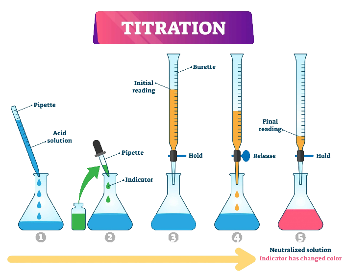
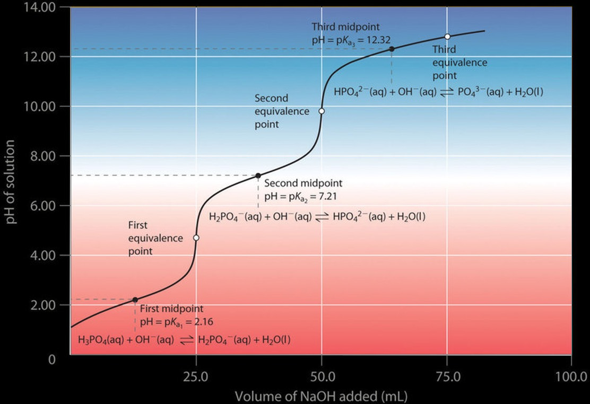

Qualitative analysis is the process through which the quality of a substance is determined, e.g., detecting the presence of carbon, hydrogen, oxygen…
Quantitative analysis is the process through which we determine the percentage composition of the elements in a substance or the concentration of a solution, e.g., hematological analyses, measurements of sugars/proteins in food, etc.
Titration: It is a method of quantitative analysis. Using this method, the unknown concentration of a substance is determined by adding a solution of known concentration with which it reacts stoichiometrically.
Glassware:
For more information about the glassware, check out our laboratory guide
For monoprotic acids and bases, it is true that
\(C_a \cdot V_a = C_k \cdot V_k => C_a = \frac{C_k \cdot V_k}{V_a}\)
Where a is the unkown solution and k is the known solution.
\(C_k\) and \(V_k\) are constants, and so the errors are caused by \(V_a\)
If \(C_a\) in the experiment is
Point 1: No NaOH added yet, so the pH of the analyte is low (it predominantly contains H3O+ from dissociation of HCl).
Point 2: This is the pH recorded at a time point just before complete neutralization takes place.
Point 3: This is the equivalence point (halfway up the steep curve). At this point, moles of NaOH added = moles of HCl in the analyte. At this point, \(\ce{H3O^+}\) is completely neutralized by \(OH^-\). The solution only has salt (NaCl) and water, and therefore the pH is neutral, i.e., pH = 7.
Point 4: Addition of NaOH continues, and pH starts becoming basic because HCl has been completely neutralized and now an excess of OH⁻ is present in the solution (from dissociation of NaOH).
There are four parts to the titration curve of a weak acid (analyte) with a strong base (titrant).
Pure Acid
Treat as a weak acid.
\[pH= -log \sqrt{(K_a \cdot C_a)}\]
Buffer Region
One way to make a buffer is to partially neutralize an acid, and so in the buffer region we can use the Henderson-Hasselbalch equation.
\[pH = pK_a + log \frac{[base]}{[acid]}\]
Half equivalence
In a titration this is known as half equivalence or half titer, which is the volume required to titrate off half of the titratable protons (of a monoprotic acid or the first proton of a polyprotic acid). That is, at half equivalence, \(V_b = \frac{V_{eq}}{2}\)
\(pH_{at half titer} = pK_a + log \frac{V_b}{V_{eq} - V_b}\)
\(= pK_a + log \frac{\frac{V_{eq}}{2}}{V_{eq} - \frac{V_{eq}}{2}}\)
\(= pK_a + log \frac{\frac{V_{eq}}{2}}{\frac{V_{eq}}{2}}\)
\(= pK_a + log 1\)
\(= pK_a\)
The method used for weak base + strong acid is very similar to that presented before.
Weak acid + weak base titrations involve some more complicated (but not too complicated) acid-base equilibria calculations.
Each proton had its own ionization constant, with
\(K_{a_1} > K_{a_2} > K_{a_3}\)
This results in a titration curve like that of the figure. If each subsequent \(K_a\) is at least 1000 times smaller than the previous, then the protons are taking off stepwise, and there would be a unique equivalence point for each step. In a monoprotic titration, the base after the equivalence point is in excess, and the solution quickly becomes basic. But if there is a leveling off, that could indicate another titratable proton.
Written by Fillios Memtsoudis